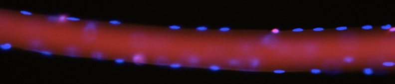
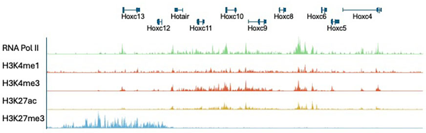

Restoring muscle regeneration in disease and aging
Our goal is to understand how stem cells rebuild damaged tissue, why this process fails during aging and disease, and how regeneration can be restored. We study muscle stem cells and the environments they inhabit, combining stem cell biology, genomics, epigenetics, and regenerative medicine to uncover the mechanisms that control tissue repair.
Research Focus

Why do young tissues heal so effectively, while aging and diseased tissues lose their ability to regenerate?
Our laboratory studies this question using skeletal muscle as a model system. Muscle contains a remarkable population of stem cells that can rebuild damaged tissue after injury, yet this regenerative capacity declines during aging and is severely compromised in diseases such as muscular dystrophy. Aging and disease profoundly alter the tissue environment, changing the inflammatory, metabolic, and extracellular signals that muscle stem cells receive. We seek to understand how these environmental changes influence stem cell behavior and how they are interpreted through gene regulatory and epigenetic mechanisms to determine whether regeneration succeeds or fails. By combining stem cell biology, genomics, epigenetics, computational biology, and regenerative medicine, we investigate the mechanisms that control tissue repair and identify strategies to restore regenerative capacity when it is lost. Through studies in mouse models and human tissues, we aim to uncover the factors that determine regenerative competence and how they can be manipulated therapeutically.
Areas of Focus
Why does regeneration fail?
What changes in muscle stem cells and their environment cause repair to break down in disease and aging?
Can we reset dysfunctional stem cells?
Are the defects in muscle stem cells permanent, or can we reprogram their epigenetics to restore regenerative function?
How does inflammation shape regeneration?
How much inflammation is needed to support repair, and at what point does it push stem cells toward failure?
How is gene expression rewritten during regeneration?
How do stem cells transition between states and establish new gene expression programs required to form functional muscle fibers?
Do cells “remember” injury?
Do stem cells retain epigenetic memory of past inflammation or damage, and how does that affect future regeneration?
Can we target epigenetics therapeutically to improve regeneration?
Can we manipulate chromatin regulators to improve regeneration in muscular dystrophy and age-related muscle loss?
